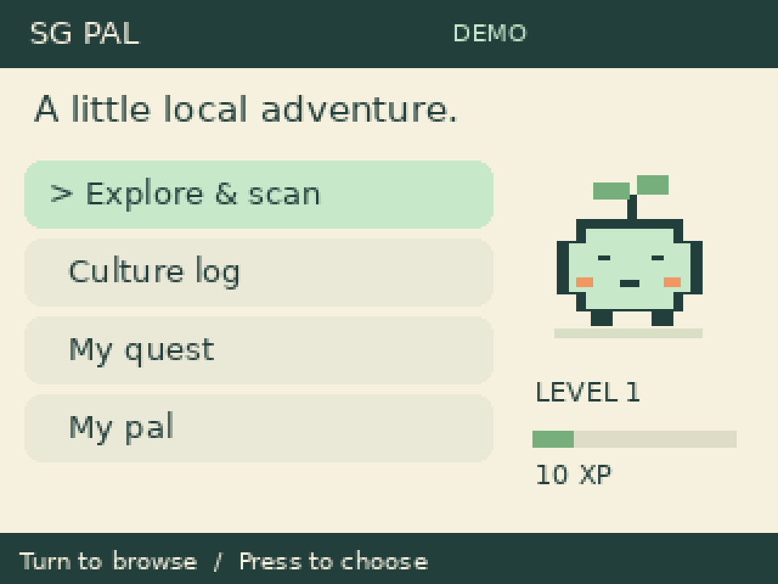

COMMON GROUND · BUILD 11 OCT 2026SG Pal
A little local adventure.
Your Pi 3B+ cultural companion: photo discoveries, quests and a growing Pocket Sprout.

Start on your Mac while fixing SSH. Demo mode needs no Pi or API key. Hardware and live AI still need on-device testing.
1. Preview on Mac
Unzip in Downloads, then open Terminal:
cd ~/Downloads/SG-Pal
python3 -m venv .venv
source .venv/bin/activate
python -m pip install -r requirements.txt
python app.py --demo
Open http://127.0.0.1:8765. Arrows browse; Enter selects; Escape goes back. Ctrl+C in Terminal stops the app.
2. Build in this order
- Get SSH working over your hotspot or use a monitor for network diagnosis.
- Copy source to the Pi; run
bash install_pi.sh; reboot. - Power off/unplug and wire LCD. Run
python test_display.py. - Power off/unplug and connect camera. Test a still photo.
- Confirm encoder labels; wire knob/buttons and run
python test_controls.py. - Run
python configure_key.py on Pi and enter Common Ground's secret privately. - Run
python app.py --pi. Test a real scan and quest. - Enable boot service only after manual checks pass.
3. Full instructions
README.md — commands, setup, SSH troubleshooting, AI, autostart and acceptance checks
WIRING.md — exact physical/BCM pin tables and electrical prerequisites
Open these text files in a text editor if your browser downloads them. The rotary photo did not expose all labels; confirm them before attaching power. LED ring and buzzer are optional and disabled. Do not connect the LCD flat ribbon to CAMERA or DISPLAY on the Pi.
What is tested?
Six software tests, a complete simulated discovery/quest flow, preview HTTP/PNG delivery, cross-origin request rejection, Python/shell syntax, and visual inspection of the main screens. Physical hardware and live OpenAI calls are not tested in this package.
Never put your API key in the frontend, the shared ZIP, screenshots or chat. The setup script saves it privately outside this project.